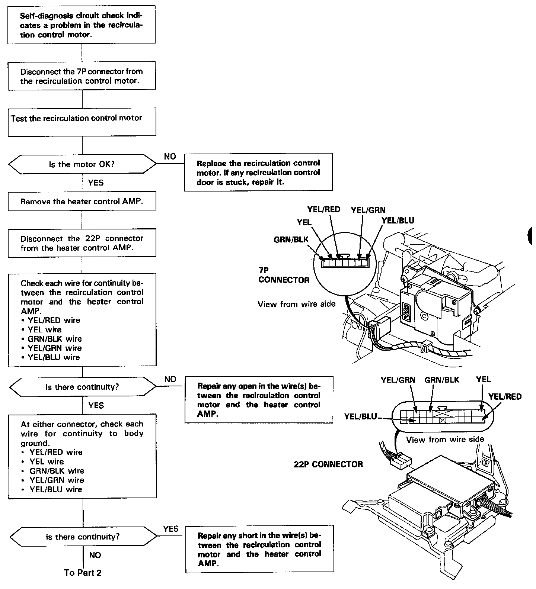
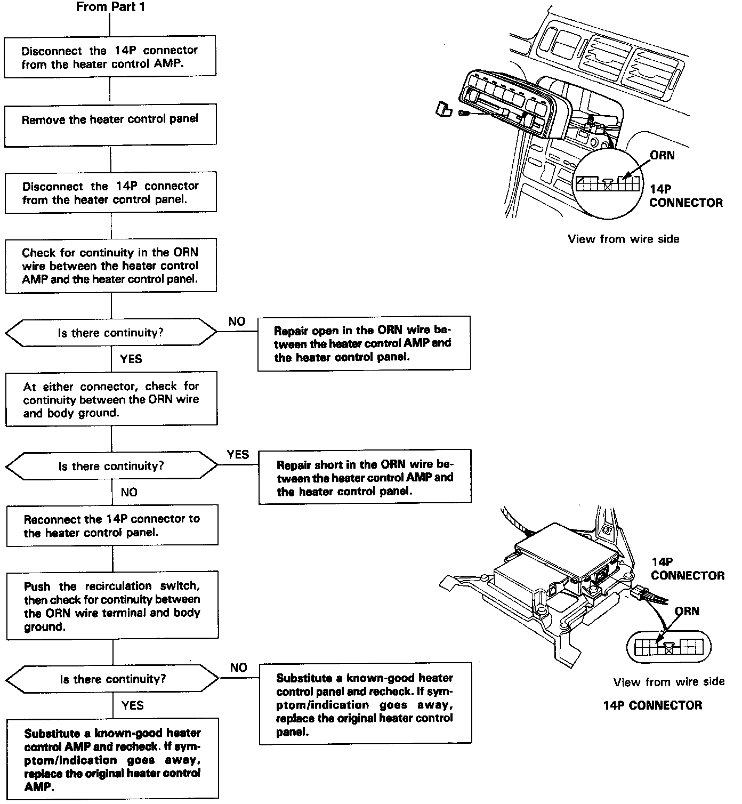

DTC 4
Recirculation Control MotorSelf-diagnosis A/C LED light indicates code 4: A problem in the recirculation control motor circuit. Use a digital multimeter (KS-AHM-32-003) to check it.
The recirculation control motor regulates the fresh/recirc door according to output from the heater control AMP.
Part 1:

Part 2:
